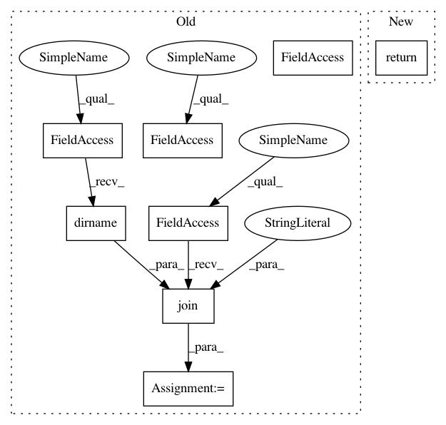

91f0e27b4d7e94e0e5cafe1c2a6fb37c80ab8b41,contrib/go/src/python/pants/contrib/go/tasks/go_workspace_task.py,GoWorkspaceTask,_symlink_remote_lib,#GoWorkspaceTask#Any#Any#Any#,83
Before Change
Adds the symlink to the remote lib to required_links.
// Transforms github.com/user/lib --> $GOPATH/src/github.com/user
remote_lib_dir = os.path.join(gopath,
"src",
os.path.dirname(self.global_import_id(go_remote_lib)))
safe_mkdir(remote_lib_dir)
remote_lib_source_dir = self.context.products.get_data("go_remote_lib_src")[go_remote_lib]
remote_lib_link = os.path.join(remote_lib_dir,
os.path.basename(remote_lib_source_dir))
if not os.path.islink(remote_lib_link):
os.symlink(remote_lib_source_dir, remote_lib_link)
required_links.add(remote_lib_link)
After Change
remote_src = os.path.join(remote_lib_source_dir, path)
if remote_src.endswith(".go") and os.path.isfile(remote_src):
yield remote_src
return self._symlink_lib(gopath, go_remote_lib, source_iter(), required_links)
def _symlink_lib(self, gopath, lib, source_iter, required_links):
src_dir = os.path.join(gopath, "src", lib.import_path)
safe_mkdir(src_dir)
In pattern: SUPERPATTERN
Frequency: 4
Non-data size: 8
Instances
Project Name: pantsbuild/pants
Commit Name: 91f0e27b4d7e94e0e5cafe1c2a6fb37c80ab8b41
Time: 2015-08-19
Author: john.sirois@gmail.com
File Name: contrib/go/src/python/pants/contrib/go/tasks/go_workspace_task.py
Class Name: GoWorkspaceTask
Method Name: _symlink_remote_lib
Project Name: PetrochukM/PyTorch-NLP
Commit Name: da821b12fbb8eb8cb1d2754ad82fe5c1bb53ac48
Time: 2018-06-02
Author: petrochukm@gmail.com
File Name: torchnlp/metrics/bleu.py
Class Name:
Method Name: get_moses_multi_bleu
Project Name: ellisdg/3DUnetCNN
Commit Name: 2f426f57ccbb033c2e8f061d22a02080bde3791d
Time: 2020-08-13
Author: dgellis90@gmail.com
File Name: brats/train.py
Class Name:
Method Name: fetch_training_data_files
Project Name: pyinstaller/pyinstaller
Commit Name: 473e4cfe41c6acb2740832fbfbfe5a6d3b37776d
Time: 2020-12-08
Author: rok.mandeljc@gmail.com
File Name: PyInstaller/utils/hooks/__init__.py
Class Name:
Method Name: exec_script
Project Name: pantsbuild/pants
Commit Name: 91f0e27b4d7e94e0e5cafe1c2a6fb37c80ab8b41
Time: 2015-08-19
Author: john.sirois@gmail.com
File Name: contrib/go/src/python/pants/contrib/go/tasks/go_workspace_task.py
Class Name: GoWorkspaceTask
Method Name: _symlink_remote_lib